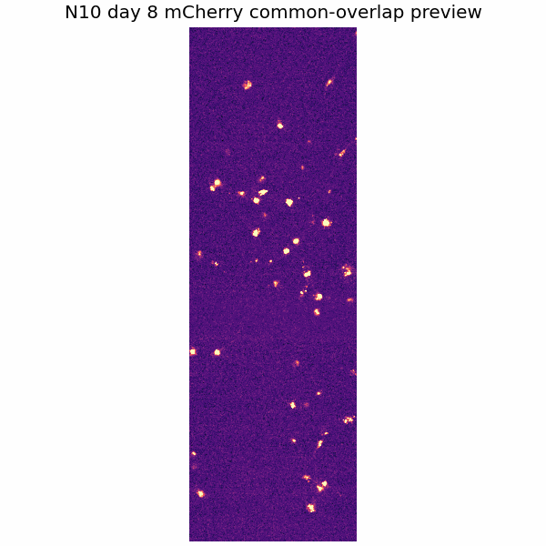
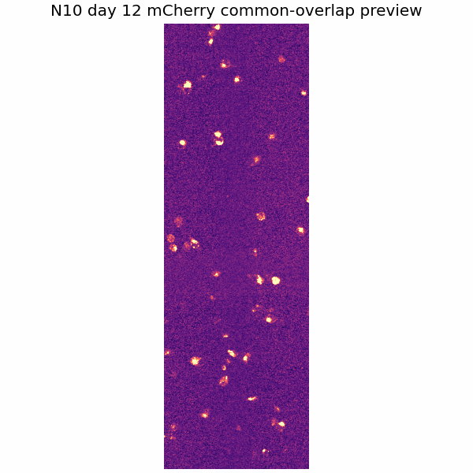
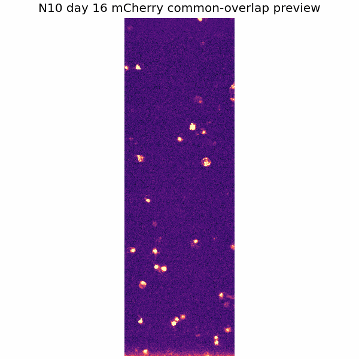
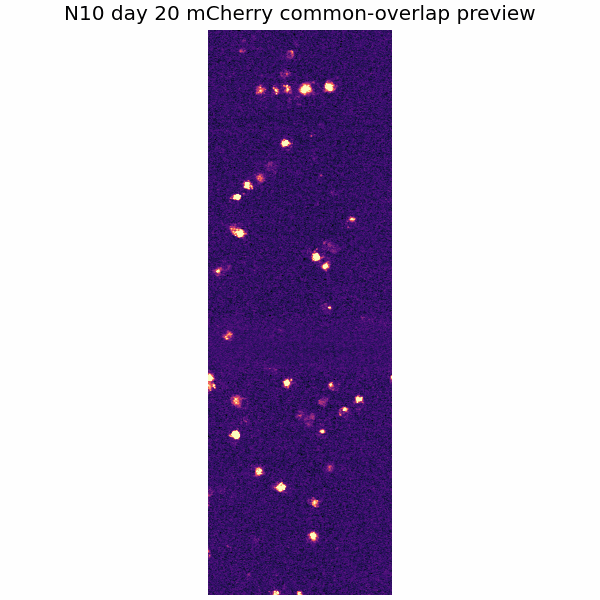
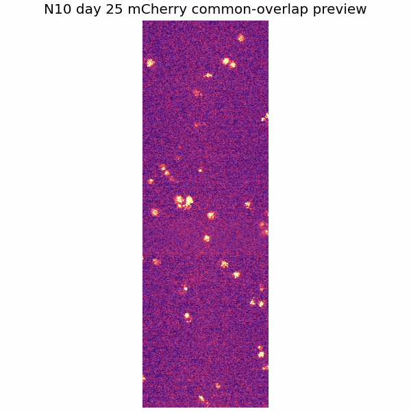
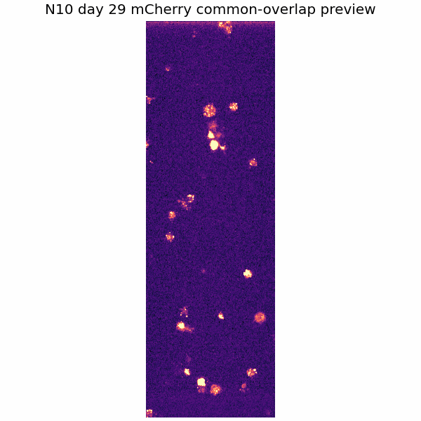
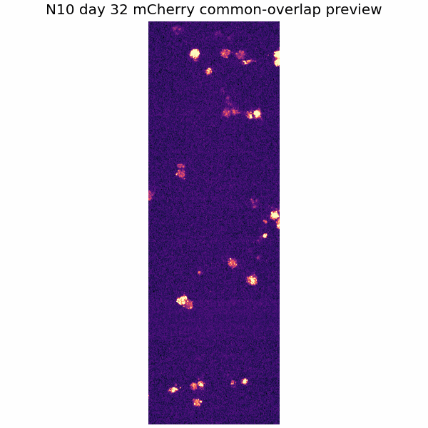
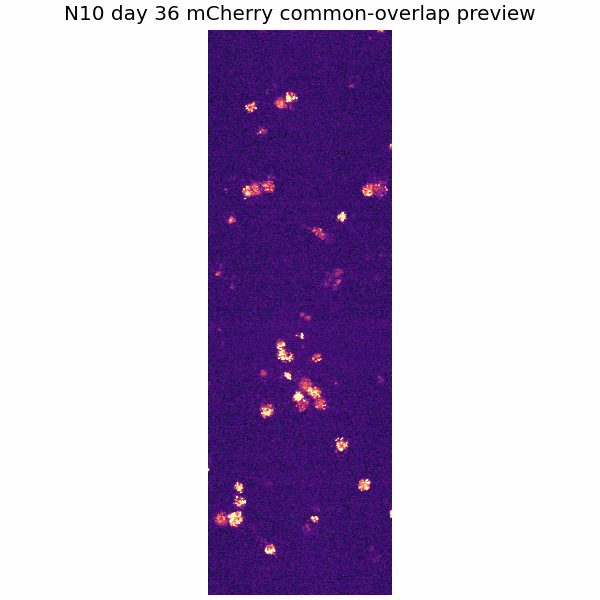
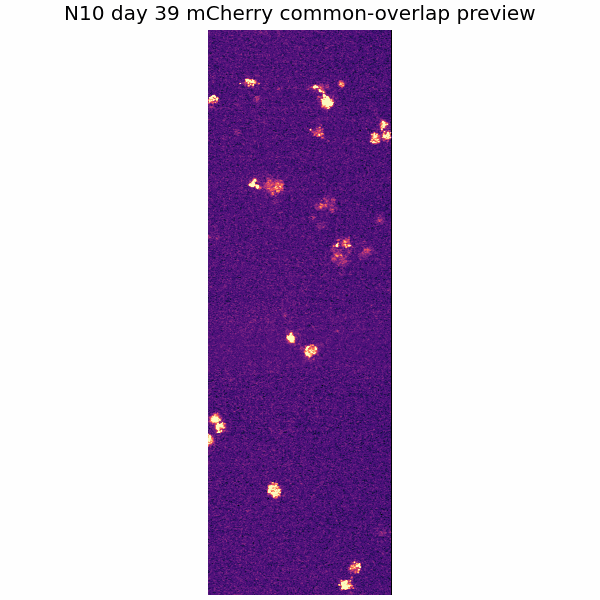

Overlap-only/common-overlap time-series preview — preferred for analysis. Use the day buttons to switch the aligned day preview in the same frame. Full registered context is retained separately and may include edge artifacts.









Show all days as montage
Day 8Day 12Day 16Day 20Day 25Day 29Day 32Day 36Day 39
Neuron / ROI Candidate Viewers
Each card is a separate neuron/ROI candidate. Manual identity status remains preliminary until reviewed.
Overlap-only views remove non-shared edge regions across days to reduce cells popping in/out due to field-of-view drift. Full registered views are retained for context but should be interpreted cautiously.
Full registered context
Large microscopy file stored locally/shared drive
Overlap-only analysis stack
Large microscopy file stored locally/shared drive
Large-shift days
6
ROI/metrics source
registered_common_overlap
ROI Readiness
6 large-shift days. Neuron ROI crops have not been generated yet.
Overlap-only views remove non-shared edge regions across days to reduce cells popping in/out due to field-of-view drift. Full registered views are retained for context but should be interpreted cautiously.